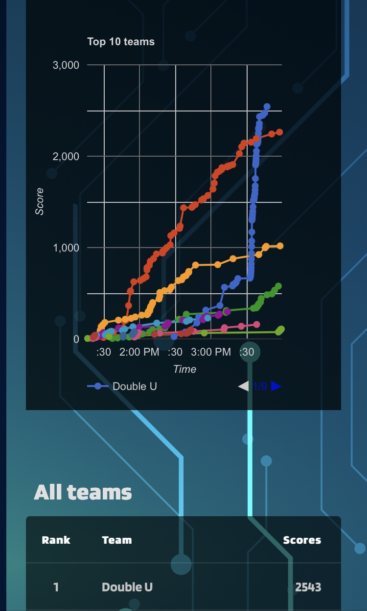

CyberOps is a cybersecurity conference hosted by the Cybersecurity Student Association (CS2A) at Old Dominion University (ODU). The event started with a breakfast provided by CS2A. After that, guest speakers do presentations on areas they specialize in. For example, Tara Noble's presentation was about cybersecurity in the Navy. Following the presentations was the Capture the Flag (CTF) competition. In a CTF, contestants are given challenges that contain flags, the answers to the challenges. CTF competitions have a variety of categories, most commonly open-source intelligence (OSINT), networking, web exploitation, reversing, and forensics.
When it came time for the competition, the team and I set up our stations. We brought an extra monitor to have the current challenge we are doing on one screen and any searches or tutorials on the other. This would increase our speed in solving the challenges. We would not have to switch between windows to see how to run a command or what specific string to enter a program. Before the competition started, the team decided to save flags until the scoreboard froze. CTF organizers freeze the scoreboard to create suspense among the competitors. During this time, competitors cannot see the scores of other teams. Therefore, we can act like we are losing before the scoreboard freezes. This gives other teams the idea that they are winning. That is exactly how the competition played out. Our team, “Double U,” would submit its first challenge one hour and thirty minutes into the competition. At this point, the first-place team had one thousand more points than us on the scoreboard. By the time the scoreboard froze, the scoreboard showed a differential of about one thousand five hundred points. However, we had one thousand eight hundred points saved outside the CTF website waiting to be submitted. When the scoreboard froze, the team sent the flags we had saved and waited for the announcement. Double U was victorious.
